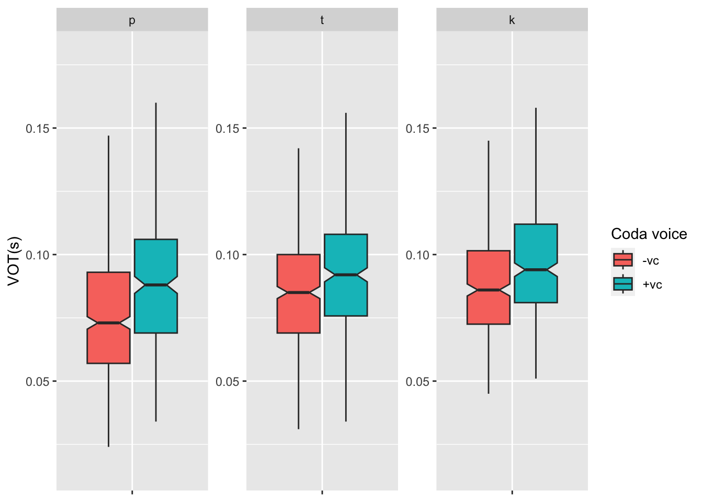

Data analysis
Preliminary plotting
By Onset POA
This is just a first pass at looking at the data so far.
data <- read.csv("/Users/chandannarayan/GitHub/Burst_voice/Data/data_12-11-24.csv", header=TRUE)
data$coda_vc <- as.character(data$coda_vc) #change class of coda_vc
data$ons_poa <- as.character(data$ons_poa) #change class of ons_poa
data$vot_ratio <- (data$vot)/(data$vdur)
number_of_subs <- length(unique(data$sub))
number_of_subs## [1] 19library(ggplot2)
library(tidyverse)
# Create a summary table with the mean and range of 'vot' for each 'ons_poa'
summary_table <- data %>%
group_by(ons_poa, coda_vc) %>%
summarize(
mean_vot = mean(vot, na.rm = TRUE),
vot_range = paste0(min(vot, na.rm = TRUE), " to ", max(vot, na.rm = TRUE))
) %>%
ungroup() # Ungroup after summarizing
# Print the summary table
print(summary_table)## # A tibble: 6 × 4
## ons_poa coda_vc mean_vot vot_range
## <chr> <chr> <dbl> <chr>
## 1 1 0 0.0788 0.024 to 0.199
## 2 1 1 0.0908 0.034 to 0.234
## 3 2 0 0.0895 0.031 to 0.21
## 4 2 1 0.0969 0.034 to 0.2
## 5 3 0 0.0925 0.045 to 0.219
## 6 3 1 0.100 0.051 to 0.225plot_overall <- ggplot(data, aes(x = ons_poa, y = vot, fill = coda_vc)) +
geom_boxplot(notch = TRUE, outlier.shape = NA) +
# Remove x-axis tick labels
theme(axis.text.x = element_blank()) +
# Remove x-axis label and update y-axis label
labs(x = NULL, y = "VOT(s)") +
# Change facet labels
facet_wrap(~ons_poa, scales = "free", labeller = labeller(ons_poa = c("1" = "p", "2" = "t", "3" = "k"))) +
# Set consistent y-axis range
scale_y_continuous(limits = c(0.015, 0.18)) +
# Update the legend
scale_fill_discrete(
name = "Coda voice",
labels = c("-vc", "+vc")
)
# + stat_summary(fun = median,geom = "text",aes(label = paste("Median:", round(..y.., 3))), # Label with median values
# vjust = -0.5, # Vertical position of the text (adjust as needed)
# position = position_dodge(width = 0.75), # Dodge the text for better visibility
# show.legend = FALSE ) # Do not show in legend
plot_overall
# Plot by sub
plot_vot_poa <- ggplot(data, aes(x = vot, y = as.factor(ons_poa), fill = as.factor(coda_vc))) +
geom_boxplot(notch = TRUE, outlier.shape = NA, width = 0.5) + # Notched boxplots
theme_minimal() + # Clean aesthetic
labs(x = "VOT(s)", y = "Onset POA", fill = "Coda voice") +
scale_y_discrete(labels = c("1" = "p", "2" = "t", "3" = "k")) + # Custom y-axis labels
#scale_x_continuous(limits = c(0, 2), expand = c(0, 0)) + # Adjust x-axis range
scale_fill_discrete(
labels = c("0" = "[-vc]", "1" = "[+vc]") # Custom legend labels
)
print(plot_vot_poa + facet_wrap(~sub))
plot_vdur_poa <- ggplot(data, aes(x = vdur, y = as.factor(ons_poa), fill = as.factor(coda_vc))) +
geom_boxplot(notch = TRUE, outlier.shape = NA, width = 0.5) + # Notched boxplots
theme_minimal() + # Clean aesthetic
labs(x = "Vdur(s)", y = "Onset POA", fill = "Coda voice") +
scale_y_discrete(labels = c("1" = "p", "2" = "t", "3" = "k")) + # Custom y-axis labels
scale_x_continuous(limits = c(0, 0.3), expand = c(0, 0)) + # Adjust x-axis range
scale_fill_discrete(
labels = c("0" = "[-vc]", "1" = "[+vc]") # Custom legend labels
)
plot_vdur_poaplot_vdur_poa + facet_wrap(~sub)plot_overall + facet_wrap(~sub)By Onset POA and Vowel
I’m using a “ridge plot” here which is a stacked density plot for voiceless and voiced coda tokens by POA and vowel.
plot_vowel <- ggplot(data, aes(x = vowel,y = vot, fill = coda_vc)) + geom_boxplot(notch=TRUE) +
labs(y="VOT(s)", x="Vowel", fill="Coda voicing")+
facet_wrap(~ons_poa, scale = "free")
plot_vowel
## Ridge plot with medians
library(dplyr)
library(ggridges)
# New facet label names for POA variable
poa.labs <- c("p", "t", "k")
names(poa.labs) <- c("1", "2", "3")
# Create custom labels
poa_labels <- c("1" = "[pʰ]",
"2" = "[tʰ]",
"3" = "[kʰ]")
vowel_labels <- c("ae" = "æ",
"aw" = "ɑ",
"eh" = "ɛ",
"ih" = "ɪ",
"uh" = "ʌ")
plot_vowel_ridges <- ggplot(data, aes(x = vot, y = coda_vc, fill = coda_vc)) +
geom_density_ridges(alpha = 0.7) +
#geom_vline(data = medians_data, aes(xintercept = median_vot),
#linetype = "dotted", color = "black", linewidth = 0.5) +
scale_x_continuous(breaks = c(0, 0.1, 0.2), limits = c(0, NA)) +
scale_y_discrete(labels = c("0" = "Voiceless", "1" = "Voiced")) +
scale_fill_manual(
name = "Coda",
values = c("0" = "#F8766D", "1" = "#00BFC4"),
labels = c("0" = "Voiceless", "1" = "Voiced")
) +
labs(x = "VOT(s)", y = "") +
facet_grid(vowel ~ ons_poa, scales = "free_x",
labeller = labeller(ons_poa = poa_labels, vowel = vowel_labels)) +
theme_ridges() +
theme(axis.text.y = element_blank(),
axis.title.x = element_text(hjust = 0.5),
strip.text = element_text(margin = margin(t = 4, b = 4)),
strip.text.x = element_text(margin = margin(t = 3, b = 4)),
strip.text.y = element_text(margin = margin(l = 3, r = 3)),
panel.spacing = unit(0.3, "cm"))
print(plot_vowel_ridges)## Remove the vowel facet:
# Calculate means without vowel grouping
means_data <- data %>%
group_by(ons_poa, coda_vc) %>%
summarise(mean_vot = mean(vot, na.rm = TRUE), .groups = 'drop')
# I'm not using the means right now
plot_ridges <- ggplot(data, aes(x = vot, y = coda_vc, fill = coda_vc)) +
geom_density_ridges(alpha = 0.7) +
scale_x_continuous(breaks = c(0, 0.05, 0.1, 0.15, 0.2), limits = c(0, NA)) +
scale_y_discrete(labels = c("0" = "Voiceless", "1" = "Voiced"), expand = c(0,0)) +
scale_fill_manual(
name = "Coda",
values = c("0" = "#F8766D", "1" = "#00BFC4"),
labels = c("0" = "Voiceless", "1" = "Voiced")
) +
labs(x = "VOT(s)", y = "") +
facet_wrap(~ ons_poa, scales = "free_x",
labeller = labeller(ons_poa = poa_labels)) +
theme_ridges() +
theme(axis.text.y = element_blank(),
axis.title.x = element_text(hjust = 0.5),
strip.text = element_text(margin = margin(t = 4, b = 4)),
strip.text.x = element_text(margin = margin(t = 3, b = 4)),
panel.spacing = unit(0.3, "cm"),
legend.position = c(0.85, 0.85), # Position legend inside plot area
legend.background = element_rect(fill = "white", color = "black", size = 0.3),
legend.margin = margin(t = 5, r = 5, b = 5, l = 5),
legend.title = element_text(size=12),
legend.text = element_text(size=10))
# To widen the image when you save it, use:
ggsave("plot_ridges.png", plot = plot_vowel_ridges,
width = 12, height = 6, dpi = 300)
plot_ridges## overlapping density plots
plot_vowel_density <- ggplot(data, aes(x = vot, fill = coda_vc)) +
geom_density(alpha = 0.6) +
labs(x = "VOT(s)", y = "Density", fill = "Coda voicing") +
facet_wrap(~ons_poa + vowel, scales = "free")
plot_vowel_densityIt looks like there is a clear effect of coda voicing on voiceless onset VOT.
Basic models
library(lme4)
library(tidyverse)
data_mod <- data %>%
#rename POA labels from 1,2,3 to p,t,k
mutate(ons_poa = recode(ons_poa, "1" = "p-", "2" = "t-", "3" = "k-"))
model_full <- lmer(vot ~ ons_poa * coda_vc * vowel + (1 | sub), data = data_mod)
summary(model_full)## Linear mixed model fit by REML ['lmerMod']
## Formula: vot ~ ons_poa * coda_vc * vowel + (1 | sub)
## Data: data_mod
##
## REML criterion at convergence: -11761.1
##
## Scaled residuals:
## Min 1Q Median 3Q Max
## -3.9437 -0.6436 -0.0556 0.5452 5.7280
##
## Random effects:
## Groups Name Variance Std.Dev.
## sub (Intercept) 0.0005812 0.02411
## Residual 0.0003068 0.01752
## Number of obs: 2311, groups: sub, 19
##
## Fixed effects:
## Estimate Std. Error t value
## (Intercept) 9.651e-02 5.769e-03 16.729
## ons_poap- -9.673e-03 2.331e-03 -4.151
## ons_poat- -2.342e-03 2.320e-03 -1.009
## coda_vc1 8.175e-03 2.594e-03 3.152
## vowelaw 2.241e-03 2.594e-03 0.864
## voweleh -6.737e-03 5.800e-03 -1.161
## vowelih -9.162e-03 2.325e-03 -3.940
## voweluh -8.759e-03 2.594e-03 -3.377
## ons_poap-:coda_vc1 -1.695e-03 4.188e-03 -0.405
## ons_poat-:coda_vc1 -2.412e-03 3.480e-03 -0.693
## ons_poap-:vowelaw -2.612e-03 3.487e-03 -0.749
## ons_poat-:vowelaw 6.579e-05 3.480e-03 0.019
## ons_poap-:voweleh -2.668e-03 6.253e-03 -0.427
## ons_poat-:voweleh 2.044e-03 4.783e-03 0.427
## ons_poap-:vowelih -9.108e-03 3.491e-03 -2.609
## ons_poat-:vowelih -7.742e-03 4.022e-03 -1.925
## ons_poap-:voweluh -7.080e-03 3.491e-03 -2.028
## ons_poat-:voweluh -3.610e-03 3.480e-03 -1.037
## coda_vc1:vowelaw -5.549e-03 3.672e-03 -1.511
## coda_vc1:voweleh 3.947e-04 4.640e-03 0.085
## coda_vc1:vowelih -2.470e-03 4.186e-03 -0.590
## coda_vc1:voweluh 1.411e-03 3.855e-03 0.366
## ons_poap-:coda_vc1:vowelaw 9.920e-03 5.570e-03 1.781
## ons_poat-:coda_vc1:vowelaw 5.983e-03 5.059e-03 1.183
## ons_poap-:coda_vc1:voweleh 9.326e-03 6.253e-03 1.492
## ons_poap-:coda_vc1:vowelih 4.897e-03 6.360e-03 0.770
## ons_poat-:coda_vc1:vowelih 8.470e-03 6.249e-03 1.355
## ons_poap-:coda_vc1:voweluh 7.902e-03 5.694e-03 1.388
## ons_poat-:coda_vc1:voweluh 2.002e-03 5.193e-03 0.385
## fit warnings:
## fixed-effect model matrix is rank deficient so dropping 1 column / coefficientRemove the vowel term:
data_mod <- data %>%
#rename POA labels from 1,2,3 to p,t,k
mutate(ons_poa = recode(ons_poa, "1" = "p-", "2" = "t-", "3" = "k-"))
model <- lmer(vot ~ ons_poa * coda_vc + (1 | sub), data = data_mod)
summary(model)## Linear mixed model fit by REML ['lmerMod']
## Formula: vot ~ ons_poa * coda_vc + (1 | sub)
## Data: data_mod
##
## REML criterion at convergence: -11732.6
##
## Scaled residuals:
## Min 1Q Median 3Q Max
## -3.4873 -0.6535 -0.0630 0.5458 5.5930
##
## Random effects:
## Groups Name Variance Std.Dev.
## sub (Intercept) 0.0005810 0.02410
## Residual 0.0003405 0.01845
## Number of obs: 2311, groups: sub, 19
##
## Fixed effects:
## Estimate Std. Error t value
## (Intercept) 9.247e-02 5.610e-03 16.482
## ons_poap- -1.375e-02 1.242e-03 -11.066
## ons_poat- -3.011e-03 1.309e-03 -2.301
## coda_vc1 7.485e-03 1.378e-03 5.430
## ons_poap-:coda_vc1 4.575e-03 1.914e-03 2.390
## ons_poat-:coda_vc1 -8.461e-05 1.926e-03 -0.044
##
## Correlation of Fixed Effects:
## (Intr) ons_pp- ons_pt- cd_vc1 ons_pp-:_1
## ons_poap- -0.129
## ons_poat- -0.122 0.553
## coda_vc1 -0.116 0.525 0.498
## ons_pp-:c_1 0.084 -0.649 -0.359 -0.720
## ons_pt-:c_1 0.083 -0.375 -0.679 -0.716 0.515Plot of the model
p <- ggplot(data_mod, aes(x=vdur, y=vot, color=coda_vc)) +
geom_point(outlier.shape = NA) +
geom_smooth(method=lm) + xlab("Vowel dur (ms)") + ylab("VOT (ms)")
p + facet_wrap(~ons_poa)# Load required package
library(lme4)
# Convert coda_vc to a factor if it's not already
data$coda_vc <- factor(data$coda_vc, levels = c(0,1))
# Fit the GLMM
model_coda <- glmer(
coda_vc ~ vot * ons_poa + (1 | sub),
data = data,
family = binomial(link = "logit")
)
# Summary of the model
summary(model_coda)## Generalized linear mixed model fit by maximum likelihood (Laplace
## Approximation) [glmerMod]
## Family: binomial ( logit )
## Formula: coda_vc ~ vot * ons_poa + (1 | sub)
## Data: data
##
## AIC BIC logLik deviance df.resid
## 3075.4 3115.7 -1530.7 3061.4 2304
##
## Scaled residuals:
## Min 1Q Median 3Q Max
## -2.2461 -0.8501 -0.6174 1.0540 2.0280
##
## Random effects:
## Groups Name Variance Std.Dev.
## sub (Intercept) 0.2331 0.4828
## Number of obs: 2311, groups: sub, 19
##
## Fixed effects:
## Estimate Std. Error z value Pr(>|z|)
## (Intercept) -2.5975 0.3133 -8.291 < 2e-16 ***
## vot 24.2466 3.3339 7.273 3.52e-13 ***
## ons_poa2 0.5109 0.3320 1.539 0.124
## ons_poa3 0.4505 0.3467 1.299 0.194
## vot:ons_poa2 -3.9918 3.5115 -1.137 0.256
## vot:ons_poa3 -3.0339 3.5976 -0.843 0.399
## ---
## Signif. codes: 0 '***' 0.001 '**' 0.01 '*' 0.05 '.' 0.1 ' ' 1
##
## Correlation of Fixed Effects:
## (Intr) vot ons_p2 ons_p3 vt:n_2
## vot -0.905
## ons_poa2 -0.426 0.410
## ons_poa3 -0.380 0.362 0.428
## vot:ons_po2 0.454 -0.500 -0.946 -0.414
## vot:ons_po3 0.427 -0.470 -0.424 -0.947 0.467# Generate new data for predictions
vot_range <- seq(from = 0, to = 0.25, by = 0.005)
ons_poa_levels <- c("1", "2", "3")
#vowel_levels <- c("ae","uh","aw","eh","ih")
#sub_levels <- c(1,2,3,4,5,6,7,8,9,10,11,12,13,14,15,16,17,18,19)
sub = unique(data$sub)[1]
# Create a data frame for plotting
plot_data <- expand.grid(
vot = vot_range,
ons_poa = ons_poa_levels,
#vowel = vowel_levels,
sub = sub
)
# Add a dummy coda_vc variable (not used in prediction but avoids the error)
plot_data$coda_vc <- NA
# Add predictions from the model
plot_data$predicted_prob <- predict(model_coda, newdata = plot_data, type = "response", re.form = ~(1 | sub))
vc_pred <- ggplot(plot_data, aes(x = vot, y = predicted_prob, color = ons_poa )) +
geom_line(size = 2) +
#geom_jitter(data = data, aes(x = vot, y = as.numeric(coda_vc), color = ons_poa),
# width = 0, height = 0.05, alpha = 0.5, shape = 16) + # Jitter actual points
scale_color_discrete(
labels = c("1" = "p", "2" = "t", "3" = "k") # Custom legend labels
) +
scale_fill_discrete(
labels = c("1" = "p", "2" = "t", "3" = "k") # Custom legend labels for fill
) +
labs(
title = "",
x = "VOT (s)",
y = "Predicted Probability of Voiced Coda",
color = "Onset POA"
) +
theme_minimal() +
theme(
plot.title = element_text(hjust = 0.5, size = 16),
axis.title = element_text(size = 14),
legend.title = element_text(size = 12),
legend.text = element_text(size = 10)
)
vc_predggsave("vc_pred.png", plot = vc_pred, bg = 'white', width = 7, height =4, dpi=300)